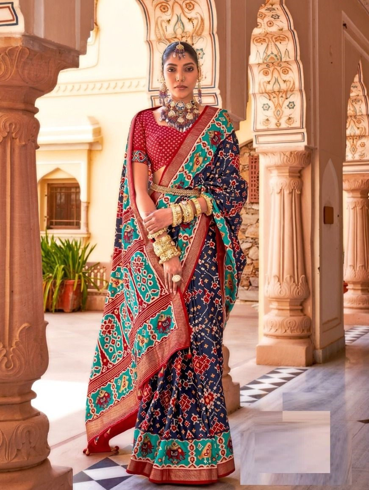
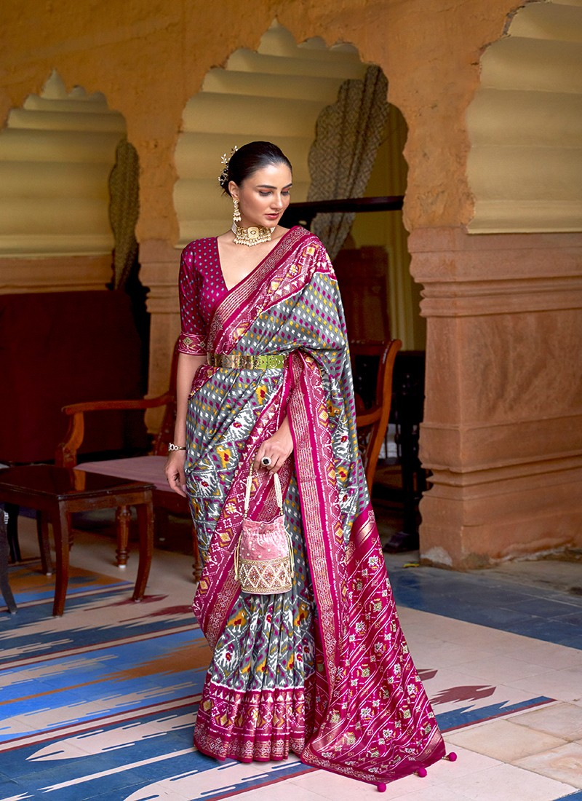
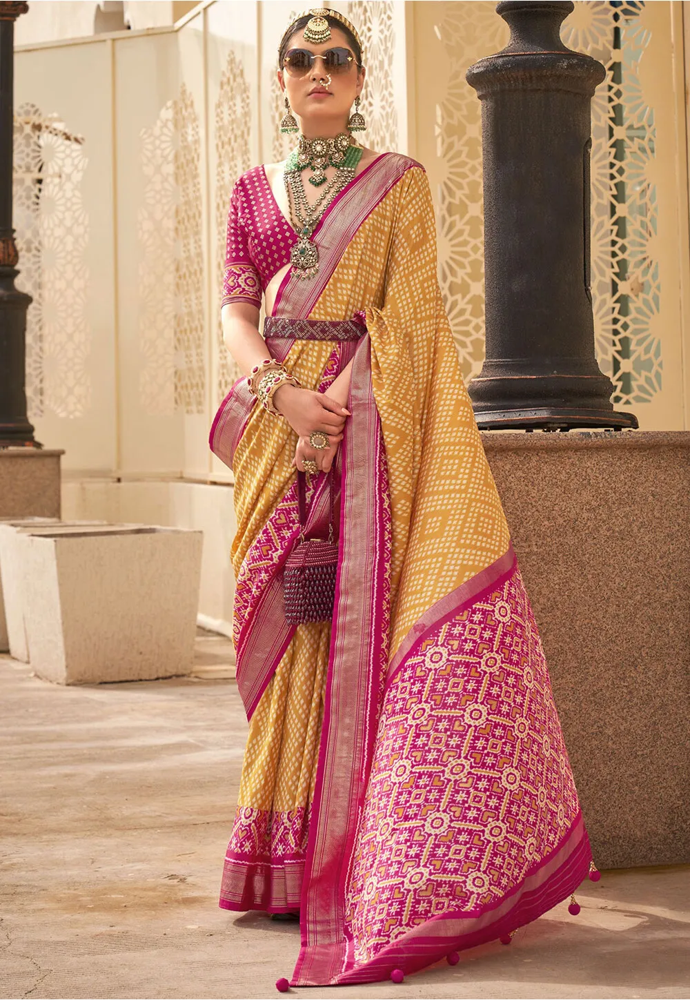
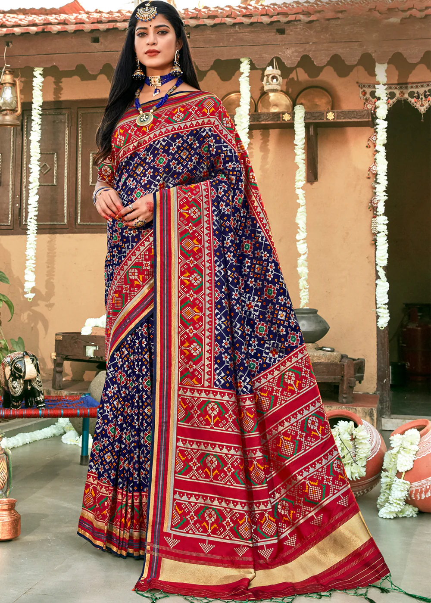

PATOLA SAREE
- Gujarat




The Patola saree is one of Gujarat’s finest contributions to the world of Indian sarees. Made from pure silk, these sarees are handwoven using a double ikkat technique, which makes them highly intricate and durable.
The Patola sarees feature geometric patterns, floral motifs, and vibrant colors, making them an exquisite choice for weddings and other grand occasions. Worn by royalty in ancient times, these sarees take months to weave and are considered a symbol of prestige.
The fine craftsmanship and use of luxurious silk make Patola sarees highly coveted in Indian households.